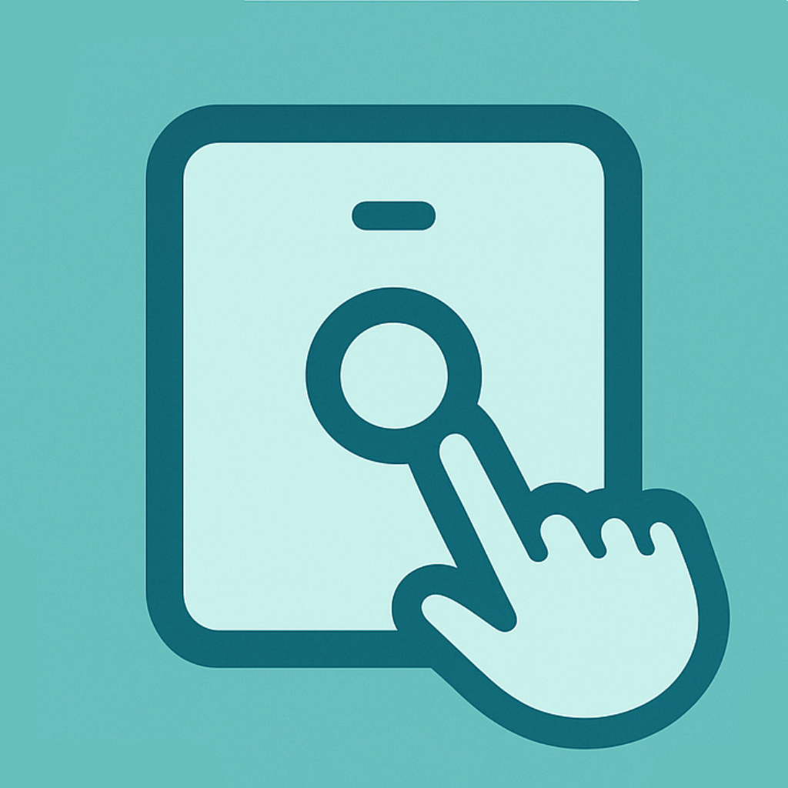

Automatic Lighting
A PIR motion sensor detects movement in the room and turns the light on automatically. After a hold period with no motion, the hardware can switch the light back off.

BrightAssistFlutter + CircuitPython + Firebase
BrightAssist is a prototype that mounts over a standard light switch, detects room motion, moves the switch with a servo, and syncs control state with a mobile app in real time.
Automatic mode
Project Goal
The project focuses on a non-invasive smart switch design. Instead of rewiring a wall switch, a 3D-printed frame holds a microcontroller, motion sensor, battery system, and servo mechanism that can physically press the switch while the app provides remote control.
A PIR motion sensor detects movement in the room and turns the light on automatically. After a hold period with no motion, the hardware can switch the light back off.
The Flutter app lets a user register a device, see device status, switch between manual and automatic modes, and toggle the light from a phone or tablet.
The prototype uses a servo to move a normal light switch from the outside, keeping the build independent from household electrical wiring.
System Design
devices/{deviceID}/isON
devices/{deviceID}/isAuto
devices/{deviceID}/ownerID
devices/{deviceID}/data
usersDevices/{uid}/devices/{deviceID}
Prototype Build
Open Project
This repository contains the Flutter app, Firebase data structure, and CircuitPython hardware script needed to understand how BrightAssist works.